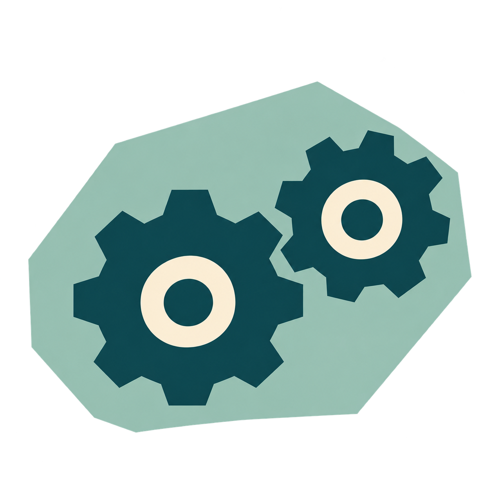

<<<<<<< HEAD
=======
>>>>>>> b034157e7bf87312c675bab82e5b976e5b227fa0
<<<<<<< HEAD
=======
>>>>>>> b034157e7bf87312c675bab82e5b976e5b227fa0
Skip to content
<<<<<<< HEAD
=======
>>>>>>> b034157e7bf87312c675bab82e5b976e5b227fa0
Project Search
<<<<<<< HEAD
On this page
=======
>>>>>>> b034157e7bf87312c675bab82e5b976e5b227fa0
<<<<<<< HEAD
=======
>>>>>>> b034157e7bf87312c675bab82e5b976e5b227fa0
Engineering
Engineering
Engineering AeroSense
<<<<<<< HEAD
=======
The questions, evidence and decisions that changed AeroSense.
Testing, review, and failure exposed invisible assumptions.
Construct WHY lives on Design; methods on Experiments; measured outcomes on Results.
Follow each Design → Build → Test → Learn → Redesign record at your own pace.
>>>>>>> b034157e7bf87312c675bab82e5b976e5b227fa0
<<<<<<< HEAD

Abstract
AeroSense’s engineering record follows changes in the biological reporter, the fluorescence reader, the decoder and computational receptor design. The wet-lab work moved from a cloning backbone to mammalian expression and from a bicistronic reporter to a GCaMP6f–Orco fusion. Hardware review prompted corrections to the high-impedance front end and removal of a redundant processor; subsequent models informed the optical and gas paths. Decoder review exposed preprocessing and clock-scheduling limitations, leading to withdrawal of unsupported precision conclusions and stricter comparison requirements. Receptor engineering adds six computational iterations, from published response prediction and mutation screening to molecular-access tests in a separate mosquito reference complex. The cycles below identify the evidence behind each decision and distinguish reviewed designs, preliminary observations, computations and completed measurements.
How to read the cycles
Each cycle links a hypothesis to a build, test or review, interpretation and revision. Builds include constructs, CAD, circuits and software. Reviews and simulations retain their own evidence limits; completing a build does not establish assay or instrument performance.
The experimental host is HEK293. Assay procedures are documented in Experiments and image-level evidence in Results. Detailed physical models, decoder methods and receptor-engineering analyses are kept on Model; build files and component choices are on Hardware. This division lets a reader follow a decision back to its underlying method without treating a narrative summary as an independent result.
AeroSense’s engineering record follows changes in the biological reporter, the fluorescence reader and the decoder. The wet-lab work moved from a cloning backbone to mammalian expression and from a bicistronic reporter to a GCaMP6f–Orco fusion. Hardware review prompted corrections to the high-impedance front end and removal of a redundant processor; subsequent models informed the optical and gas paths. Decoder review exposed preprocessing and clock-scheduling limitations, leading to withdrawal of unsupported precision conclusions and stricter comparison requirements. The cycles below identify the evidence behind each decision and distinguish reviewed designs, preliminary observations, computations and completed measurements.
The strongest archived technical loop
73 rule violations changed the board before fabrication
Hardware Cycle 1 is our clearest evidenced Design → Build → Test → Learn → Redesign cycle. We built a V1 circuit/layout, ran DRC/ERC, stopped fabrication, then revised the high-impedance front end and integration requirements. The test is a computational circuit audit, not an electrical measurement; the redesigned reader still awaits physical validation.
Design / build: V1 circuit and PCB archive.
Test: 73 DRC violations, four unconnected items, seven ERC errors and 11 warnings in the 2 August record.
Learn: clearances, incomplete connections, guard / power rules and footprint consistency blocked fabrication.
Redesign: revised circuit and review gates before fabrication; later cycles simplify control and constrain the enclosure.
The reporter redesign and the decoder clock-bug disclosure also changed our decisions. Their primary assay / run records are less complete; they remain separate from this archived circuit-audit loop.
Introduction and methods · how the cycles are read
Each cycle records an initial hypothesis, the artifact actually built, the review or test performed, its interpretation and the resulting revision. A build may be a synthesized construct, a CAD or circuit revision, or executable software; its completion does not imply a validated instrument or biological assay. A review is documented as review evidence, while simulations retain their model assumptions and numerical uncertainty. Planned validation remains prospective.
The experimental host is HEK293. Assay procedures are documented in Experiments and image-level evidence in Results. Detailed physical models and decoder methods are kept on Model; build files and component choices are on Hardware. This division lets a reader follow a decision back to its underlying method without treating a narrative summary as an independent result.
Outreach, entrepreneurship and wiki decisions support the project but are not counted as technical DBTL evidence. Their complete histories remain below and on the linked subject pages.
Outreach, entrepreneurship and wiki decisions support the project but are not counted as technical DBTL evidence. Their complete histories remain below and on the linked subject pages.
Current state: GCaMP6f–Orco fusion entering transfection / imaging
Experimental host: all team wet-lab experiments use HEK293. The vector and reporter revisions below refer to this cell background.
Wet LabWet Lab
Cycle 1
Establishing a transcription-competent vector
▣Evidence statusREVIEW-SUPPORTED
Before testing receptor function, can the delivered DNA support mammalian expression?
Sequence review; vector redesign completed
Construct backbone — before / after
Showing Before · cloning backbone
ColE1 ori
bla
adapters
Insert CDS
No mammalian promoter
No polyA
High-copy cloning backbone
Propagates in bacteria. Cannot support the intended mammalian transcription.
CMV
Insert CDS
BGH polyA
NeoR
pcDNA3.1(+)
CMV promoter + BGH polyadenylation + NeoR (G418). All ten constructs consolidated here.
Transferable lesson
Verify that every host-required expression element exists before ordering / synthesis — not after delivery. Written up for other teams on Contribution.
Design
The first requirement was to express the receptor and reporter constructs in HEK293. Our initial plan treated the high-copy plasmid supplied with synthesis as a ready-to-transfect expression vector. That assumption connected two different tasks: preserving a DNA sequence in bacteria and producing its encoded protein in a mammalian cell.
We therefore needed to establish the complete expression context before interpreting any fluorescence experiment. An intact coding sequence would be insufficient if the backbone did not supply the regulatory elements required by the host.
Build
We received the synthesised constructs as plasmid DNA in the supplied cloning backbone. This gave us a physical sequence carrier that could be amplified in E. coli; it did not yet establish a mammalian expression system.
The relevant build artifact for this cycle was the complete plasmid sequence and its annotation. Reviewing the backbone alongside the insert allowed us to check whether the delivery format actually matched the intended HEK293 experiment.
Test
Test evidence: Construct / expression-context review; primary record incomplete.
The full-backbone review identified a ColE1 origin, β-lactamase resistance and sequencing adapters, but no mammalian promoter or polyadenylation signal. The supplied plasmid therefore lacked the elements needed for the intended mammalian expression cassette.
This was a sequence-review result obtained before transfection. It does not measure transfection efficiency or protein abundance; it identifies a design prerequisite that had to be corrected before either measurement would be meaningful.
Learn
The failure was in the expression context, so adjusting DNA dose or imaging settings could not address the missing cassette. We considered building a linear CMV–insert–poly(A) fragment by overlap-extension PCR and transferring the inserts into a mammalian vector.
The vector route provided a common backbone for the whole panel and a defined selection cassette. The transferable lesson is to review host-specific expression elements together with the ordered coding sequence, at the ordering stage rather than after delivery.
Redesign
We consolidated all ten constructs onto pcDNA3.1(+), which supplies a CMV promoter, BGH polyadenylation signal and NeoR cassette for G418 selection. This established a shared expression context for the subsequent comparisons.
The next question could then move downstream: once transcription was supported, would the receptor–reporter architecture produce a useful calcium-dependent signal? Cycle 2 examines the weak signal observed with the bicistronic design. The final construct architecture is documented on Design.
Wet LabWet Lab
Cycle 2
Orco–IRES–GCaMP6 gave a very weak signal
Evidence statusDATA
Which part of the Orco–calcium–reporter chain could explain the weak green response?
Qualitative observation; mechanism remains a hypothesis
Intended signal path
1Orcoreceptor / channel
→
2Ca²⁺influx / microdomain
→
3GCaMPsensor
→
4Fluorescenceoptical report
VUAA1 is intended to stress the whole chain in one measurement — it does not by itself separately validate each molecular step.
Observation
Real but weak fluorescence response to VUAA1
↓
Initial hypothesis
Poor Orco expression
↓
Re-examination
GCaMP6 sits downstream of the IRES; Orco is the upstream, cap-dependent cistron
↓
Revised hypothesis
Reporter abundance and/or distance from the Ca²⁺ microdomain may be limiting signal amplitude
Design
The bicistronic cassette placed Orco upstream of an IRES and GCaMP downstream: CMV → Orco → STOP → IRES → GCaMP → STOP. Separate translation products were intended to preserve the proteins as independent molecules. The visibly fluorescent OR–IRES–mCherry modules made the general architecture appear practical.
The important assumption was that the same architecture would also provide enough GCaMP for a small, transient calcium response. A constitutively visible marker and a calcium-sensitive reporter impose different signal requirements, so that assumption needed its own test.
Build
We synthesised the Orco–IRES–GCaMP construct and transfected it into HEK293 in the receptor-module workflow. The physical build retained separate Orco and cytosolic GCaMP proteins; the reporter was translated from the downstream IRES position.
This arrangement allowed the Orco pathway to be challenged without first selecting an odor-specific receptor–ligand pair. It also established the earlier architecture against which the subsequent fusion design could be compared.
Test
Test evidence: Preliminary reporter observation; quantitative comparison not archived.
We challenged the pathway with VUAA1, an Orco agonist [2]. The team recorded a very weak green-fluorescence increase that could be noticed on close inspection but was not sufficiently reliable for quantitative analysis.
This qualitative observation motivated a redesign; it is not a reported dose–response curve or a measured estimate of channel activity. The observation alone cannot distinguish receptor abundance, membrane localization, reporter abundance, calcium handling or imaging limitations.
Learn
The construct map changed our diagnosis. Orco occupied the cap-dependent upstream position, whereas GCaMP occupied the IRES-dependent downstream position. Reduced downstream expression was therefore a plausible reporter limitation [3]. GCaMP fluorescence also depends on calcium state [4]; a dim resting image cannot by itself establish failed expression.
A freely distributed cytosolic reporter may additionally sample calcium differently from a reporter near the channel. These explanations remained hypotheses because this cycle did not measure abundance or localization independently. Bright mCherry was consequently insufficient evidence that the IRES arrangement suited the GCaMP readout.
Redesign
We chose a single-ORF GCaMP6f–linker–Orco fusion to address translation stoichiometry and reporter proximity together. A 2A arrangement could improve coordinated production but would still produce separate proteins, so it would not address the proximity hypothesis.
This decision deliberately changed several design features. The next comparison must evaluate the redesigned construct as a whole, with ionomycin and VUAA1 controls to separate reporter competence from channel-linked response. It cannot attribute any improvement to proximity alone.
Can a pore-proximal GCaMP6f fusion provide a quantifiable response without disrupting Orco function?
Construct built; functional comparison pending
Test in progress
Construct synthesised (BBa_26E11Z80); entering transfection and calcium imaging.
Fixed fluorescence fields are available; the live comparative ΔF/F₀ measurement remains pending.
Reporter architecture — before / after
Showing Old · IRES
Orco
→
STOP
→
IRES
→
GCaMP6
Two cistrons; sensor translation IRES-dependent; sensor free in cytosol.
GCaMP6f
→
(GGGGS)₃
→
Orco
Single ORF; 1:1 stoichiometry; sensor tethered near the channel mouth.
The redesigned construct tests the architectural hypothesis, but the comparison is not a strict single-variable experiment because multiple reporter/fusion features changed together (IRES → fusion, GCaMP6 → GCaMP6f, RSET leader, linker).
A planned old-vs-new ΔF/F₀ comparison is a useful functional check — not definitive attribution of causality to one individual design variable.
Why this change
Remove the IRES reporter bottleneck and tether the sensor near the pore. Full ORF rationale: Design · Module 2.
VUAA1-evoked ΔF/F₀ large enough to quantify on the plate reader, clearly separated from vehicle
Response abolished in Ca²⁺-free buffer (extracellular Ca²⁺ influx, not sensor artefact)
Observed result
○Not yet available — transfection / calcium imaging in progress. No placeholder numbers.
Design
We placed GCaMP6f at the Orco N terminus through a flexible (GGGGS)₃ linker. The single reading frame addresses coordinated translation; the linker is intended to provide flexibility while keeping the reporter close to the channel. The intended cytosolic N-terminal placement follows the established insect OR/Orco topology [5][6].
The design introduces a new risk: a fusion can affect folding, localization or channel function. We therefore treat the architecture as a testable response to Cycle 2, with functional controls required before it can be considered an improved sensor.
Build
The pre-synthesis review checked reading frame, internal stops, Kozak context, domain order, orientation and cloning junctions. The recorded coding sequence is 2,856 bp / 951 amino acids, with no internal stop; the Kozak sequence is GCCACCATGG. Synonymous codons diversified the three repeated 15-bp linker units while retaining the peptide sequence.
The final 8,293-bp pcDNA3.1(+) plasmid was synthesised, the vendor sequence matched the intended construct, and the part was recorded as BBa_26E11Z80. These are sequence and construction checks; they establish the material available for testing, not its calcium-response performance.
Test
Test evidence: Construct design and topology review; functional test open.
The available microscopy record now covers 25 fields across 12 conditions before G418 selection, imaged about 44–48 hours after transfection. DAPI followed 2% PFA fixation. The analysis on Results quantifies reporter-positive fractions among eligible segmented DAPI objects; dense regions limit the denominator, and the fields are not independent biological replicates.
These fixed fluorescence images establish the scope of the available expression evidence. They do not supply the planned live VUAA1 time course. The functional gate remains a quantifiable ΔF/F₀ response relative to vehicle, accompanied by calcium-free and reporter-competence controls. G418 selection is ongoing.
Learn
The current evidence distinguishes sequence correctness, fluorescence detectability and dynamic sensor function. A construct can satisfy the first two without meeting the third. GCaMP6f resting brightness and crowded nuclei make a simple “bright cells / all cells” interpretation particularly uncertain in the supplied fields.
For the planned same-plate comparison, any improved VUAA1 response would support the complete fusion redesign. Because reporter version, expression architecture and localization were changed together, a separate controlled experiment would be needed to assign the effect to one mechanism.
Redesign
The next revision depends on the control pattern. If ionomycin produces a reporter response but VUAA1 does not, the receptor/channel branch becomes the priority for follow-up. If both fail, reporter competence and assay conditions need examination before interpreting the receptor. A response to both still requires vehicle and calcium-dependence comparisons.
We will retain the current sequence until those observations justify a change. The ongoing G418 batch and future live imaging will be reported as new evidence when available; this cycle does not yet claim stable selection or functional rescue.
BBa_26E11Z80: GCaMP6f–Orco fusion Registry record. The record was verified read-only on 11 October 2026; its Documentation section was empty. Registry existence is not functional characterization.
Diagnostic logic
Ionomycin × VUAA1 matrix
Cycle 2 taught that “no signal” is not one failure. Two independent controls separate reporter vs channel:
ionomycin (Ca²⁺ ionophore — bypasses the channel) and VUAA1 (Orco agonist — full chain).
Select a pattern
Pattern: both respond
Interpretation
Fully functional pathway (working hypothesis): reporter and channel both respond under these controls.
Interpretation
Sensor fine; channel not: investigate OR/Orco folding or trafficking.
Interpretation
Sensor not functional: investigate expression and construct integrity.
Static reference — not a live assay. Implementation status of ionomycin in the SOP: Experiments.
Running both localises a failure faster; this is the control set we wish we had applied at the start of Cycle 2.
Engineering summary
What we built. What changed.
Work. We checked the mammalian expression backbone, investigated the weak IRES reporter, and redesigned the sensing construct as a GCaMP6f–Orco fusion.
Outcome. The constructs were consolidated onto pcDNA3.1(+), and fusion construct BBa_26E11Z80 was synthesised for transfection and calcium imaging. The ionomycin × VUAA1 control scheme separates reporter response from channel response.
Construct compatibility decision
Internal BsaI/SapI/PstI sites were retained in the synthesised construct to keep the Registry sequence consistent with the built material and protect the imaging schedule. View the compatibility tables →
8 October 2026: current CAD, manuals and software supplied; physical validation remains open
Dry LabHardware
Cycle 1
From a Complete Circuit to a Measurable Circuit
▣Evidence statusREVIEW-SUPPORTED
Would the first circuit preserve a weak photodiode signal through to digitization?
Electrical design audit and professional review
Conceptual pivot
Before
“Amplify the fluorescence as much as possible”
↓
After
“Preserve measurement integrity throughout the entire analog and optical chain.”
Hardware V1 → V2 (measurement integrity)
Showing Before · V1
Gain-first V1
100 MΩ TIA emphasis for maximum amplification
Longer high-impedance PD/TIA routing risk
Shared analog/digital supply priorities
Stopped before fab after DRC/ERC + review
Integrity-first V2
Shorter PD–LMP7721 path + guarded region
ADS8866 symbol rebuilt; 3-wire CS + damping
Separate 3V3_ANA / 3V3_DIG rails
Improved decoupling and return-current management
Design
The first reader design connected LED excitation, the sample, a photodiode, an LMP7721 transimpedance amplifier, an ADS8866 ADC and an ESP32. A 100 MΩ feedback resistance was selected as the starting point for amplifying weak photocurrent; four LED channels, power regulation and a Raspberry Pi interface were incorporated into a four-layer board.
The initial emphasis was obtaining enough analog gain. The review question was more demanding: could the physical layout, supplies and ADC interface preserve the signal at that gain? This distinction determined whether the schematic represented a usable measurement chain.
Build
By early August, we had produced the V1 schematic, PCB layout, initial bill of materials, footprints, 3D component models and electrical/design-rule reports. This was a complete design package for inspection, but V1 was not fabricated.
The student team owned the requirements, component selection and initial design. The package then gave iST Group a concrete basis for professional schematic and layout review, including the high-impedance detector region and the mixed-signal interfaces.
Test
Test evidence: Archived computational DRC / ERC audit.
The 2 August archive recorded 73 DRC violations, four unconnected items, seven ERC errors and 11 ERC warnings. The issues included clearances, solder-mask constraints, incomplete nets, guard connections, power rules and symbol/footprint consistency. These checks showed that V1 was not ready for fabrication.
Professional review further examined LMP7721 pin mapping and guarding, photodiode pads, TIA placement, ADS8866/reference decoupling, SAR input behavior, ESP32 EN/BOOT and critical capacitors. This evidence is a design audit; no noise floor, sensitivity or detector performance was measured on a physical V1 board.
Learn
At a 100 MΩ summing node, leakage and contamination can compete with the photocurrent we want to measure. Long sensitive traces, poor guarding, humidity or residual flux therefore matter as much as nominal amplifier gain. A high-resolution ADC cannot restore information already corrupted before digitization.
The audit also exposed a CAD-library assumption: the ADC symbol had to be checked against the datasheet. We changed the engineering objective from maximizing gain to controlling the complete path by which optical and electrical interference reach the measurement.
Redesign
V2 shortens the photodiode–LMP7721 high-impedance path and adds guarding around the detector/TIA feedback region. The ADC symbol was rebuilt from the ADS8866 pinout; the design uses the intended three-wire CS arrangement with DIN high and damping on SCLK/CONVST. Analog and digital 3.3 V supplies, decoupling and return-current paths were separated or reorganized.
These changes directly answer the review findings, but their performance benefit still requires measurement. Before committing more board area to integration, Cycle 2 asks whether every processor in the original architecture serves a necessary reader function.
Related page / link
Hardware — full READ-layer architecture (circuit theory lives there)
Evidence type: this cycle is a functional design review / architecture review
(mapping required functions onto available silicon) — not a physical experimental validation of a fabricated board.
Architecture before / after
Showing Before · V1
ESP32 + Raspberry Pi
ESP32: LED timing, ADC acquisition, low-level processing
Reader framed as an independent sensing instrument
Design
The original architecture assigned acquisition and low-level signal processing to the ESP32, while a Raspberry Pi supplied control, networking and heavier computation. This division initially appeared to leave enough capacity for future features.
After the analog review, we reconsidered that division from the reader’s actual duties: generating excitation, acquiring the ADC stream, demodulating signals, presenting a usable interface and exporting data. Each added component needed a distinct role in that workflow.
Build
The V1 schematic and board architecture included both processors. Their interfaces, space and power requirements formed part of the package reviewed in this cycle.
We mapped the required functions onto the available hardware rather than building a second processor subsystem to test it. ESP32 GPIO and serial interfaces cover reader control and acquisition, while its wireless interfaces provide a route to a local user interface. Heavier NeuroAI analysis can remain on an external computer.
Test
Test evidence: Architecture design review.
The function-mapping review identified no unique measurement task that required the Raspberry Pi inside the reader. ESP32 capabilities supported the intended acquisition/control arrangement and proposed digital lock-in processing; the processor specifications are linked in the datasheet sources below.
This was an architecture review, not a throughput benchmark on an assembled instrument. It justified simplifying the design while leaving acquisition stability, synchronization, power consumption and thermal behavior as explicit physical tests.
Learn
An additional processor carried costs beyond its purchase price: board area, connectors, supply capacity, enclosure height, heat and another software boundary. Those costs would be worthwhile if they enabled a required task; the reviewed reader workflow did not establish such a task.
Separating acquisition from external analysis also makes the interfaces clearer. The reader must export traceable measurements reliably, while decoder experiments can change without forcing every research iteration into embedded firmware.
Redesign
We removed the Raspberry Pi from V2 and retained an ESP32-based reader. The portable power concept became USB-C input, a single-cell charging/power-path stage, battery supply and a 5 V boost path. This remains an unvalidated operating concept until the assembled system is tested.
The simpler architecture became the boundary condition for the next cycle: fix the electronics and detector geometry first, then design access, enclosure and operation around the actual board. Current component and power details are collected on Hardware.
Dry LabHardware · Ongoing
Cycle 3 · Ongoing
From PCB to Instrument
◌Evidence statusIN PROGRESS
What must be fixed and documented before a physical fluorescence result can be trusted?
Layout and software artifacts supplied; bench tests pending
Incomplete by design
V2 layout exists; fabrication and the physical validation ladder have not closed this cycle.
The remaining physical questions and decision gates are explicit below; a measured outcome is still required to close this cycle.
Design
The instrument needs more than a corrected circuit: it needs repeatable LED/sample/photodiode geometry, optical filtering, an opaque enclosure, stable power and accessible programming/debug connections. These constraints couple the board to the cartridge and mechanical design.
We therefore defined an integration stage in which the PCB, optical path and user workflow share a documented configuration. The purpose is to make the first physical measurement interpretable: if a signal changes, the relevant build version and operating conditions should be identifiable.
Build
The September record documents a revised V2 placement/layout of approximately 100 × 90 mm, completed with professional support. The detector/TIA region was reorganized to shorten the sensitive node while preserving the optical geometry. Final schematic/BOM and manufacturing checks were still open in that dated record.
<<<<<<< HEAD
The later local package adds enclosure CAD, eight operating prints, component inventory, firmware builds, a local phone UI and English publication manuals for assembly and operation. These supplied artifacts extend the integration work; populated-board fit, flashing, assembly and real electrical/optical operation remain unverified.
=======
The later local package adds enclosure CAD, eight operating prints, component inventory, firmware builds, a local phone UI and bilingual assembly/operation manuals. These supplied artifacts extend the integration work; populated-board fit, flashing, assembly and real electrical/optical operation remain unverified.
>>>>>>> b034157e7bf87312c675bab82e5b976e5b227fa0
Test
Test evidence: Validation protocol; physical measurements open.
No physical V2 performance result is supplied. The next bench gate starts with essential electrical/mechanical preflight, followed by the focused cell-free fluorescence-standard experiment described on Hardware. Dark measurements, excitation leakage, standards and channel recovery must be interpreted together.
The older ten-step validation ladder is retained as a roadmap for later biological and system questions. Software builds and computational optical/gas results are separate completed activities; they do not close the physical verification gate.
Learn
The integration record has made the remaining dependencies explicit. A successfully built application does not establish that firmware is running on the intended board; a CAD model does not establish fit; and a simulated optical signal does not establish detector noise or calibration.
The practical lesson at this stage is to keep the measurement configuration traceable before collecting data. Physical conclusions remain open. Cycle 4 addresses what computation can already tell us about optical and gas geometry while the bench validation is pending.
Redesign
We will revise the physical build from recorded discrepancies: for example, interference with a connector, an unsealable cartridge, a saturated baseline or a channel-recovery error. Each resulting change should identify the observed problem, affected part or setting, and the repeated check used to assess the revision.
The current action is to complete the defined preflight and standard-solution measurement on a documented build. Later biological fluorescence, battery endurance and user testing retain their own gates; none is treated as an inferred success of the PCB redesign.
Validation ladder
Historical physical-test roadmap. Every rung remains PLANNED; the current next experiment consolidates the essential optical checks in the standard-solution protocol, with biological and system questions retained as later gates.
Step 1 · Electrical bring-up · PLANNED
Step 1 — Electrical bring-up. Check rails, references, ESP32 boot and ADC communication on the actual board. Current software compilation does not establish flashing or physical acquisition; measured bring-up evidence remains pending.
Step 2 — Dark noise and drift. Baseline noise and temporal drift with optics dark. Planned after bring-up.
The enclosure brief required a compact footprint, real connector access, a fan below the PCB, black-sleeved flat wells, fewer printed parts and a clear assembly sequence. The resulting nominal envelope is 108 × 108 × 66 mm, with LED-based well positions and a removable seal-loading plate.
The optical and gas paths share limited space. We therefore used computation to examine collection geometry, cross-well transfer and flow redirection before freezing the mechanical arrangement. These models constrain a candidate design; they do not substitute for calibration or gas-delivery measurements.
Build
The package contains editable CAD and individual STLs for eight operating prints, including an integrated fan cradle and gas deflector. The optical model represents clear flat-bottom wells, the off-center detector proxy, filter/seal and opaque carrier. The gas model represents the common plenum and alternative perforated or directional features.
Parameter sweeps, raw outputs and illustrated manuals accompany the build sources. Published simulations retain their 100 µL liquid assumption; the later operating document proposes 80 µL. That change must be accounted for in future predictions and tests rather than silently treating the two configurations as identical.
Test
Test evidence: Conditional computational comparison.
Under its stated assumptions, the ideal NE optical case predicts 0.593 ± 0.035 nW. Intended-well fractions of 88.6–90.9% show that the modeled optical geometry still permits cross-well transfer. Frequency separation identifies modulation sources; it does not automatically remove synchronous optical mixing.
For the selected gas geometry, shelf_w8_e0p2 reduces the downward momentum proxy by 36.1% on the finest 0.20 mm grid. The fixed-STL Q3 candidate gives a worst gas t90 of 50.00 s, compared with 50.98 s in its selected-grid check. These are conditional computational outcomes; gas equilibration is not the same as liquid- or cell-plane exposure.
Subsequent spectral comparison. In the updated synthetic detector-current study, one LEE 101 layer retains 70.43% of the green proxy current and 2.987% of the LED current; two layers retain 51.27% and 0.410%, respectively. These are modeled spectral trade-offs, not measured board performance. The filter comparison states the spectrum, current model and limitations separately from the geometry calculation above.
Learn
Flat well floors did not guarantee uniform excitation, and the detector’s active area was not centered on its package. This made placement, angular collection and filtering explicit design variables. The residual transfer fractions also made an empirical well-mixing calibration necessary before assigning recovered signals to individual samples.
The gas comparison favored controlled redirection in the low-Reynolds-number regime. A faster plenum response alone cannot establish biological exposure because membrane and liquid transport add their own delays. The enclosure therefore has to preserve both replaceable sealing parts and access for validating the delivered stimulus.
Redesign
The models informed a fixed optical layout, an opaque carrier/filter arrangement and the selected shelf geometry. The 3 mL/min operating candidate remains conditional on the modeled geometry and measured flow. The next physical checks must measure fluorescence recovery and actual gas delivery, then examine the relation between gas and cell-plane concentration.
The remaining design question is usability: can someone else assemble the same geometry and recognize a valid run? Cycle 5 turns the supplied manuals and interface into a planned assembly study, while Hardware presents the result figures and their design consequences.
Use one LEE 101 layer for the first physical filter trial, then compare blank stability, headroom and signal-to-noise before choosing a layer count. The constructed OD4 curve for Edmund #29-190 also requires a real mounting and stray-light check. See the updated filter design decision.
=======
Design
The enclosure brief required a compact footprint, real connector access, a fan below the PCB, black-sleeved flat wells, fewer printed parts and a clear assembly sequence. The resulting nominal envelope is 108 × 108 × 66 mm, with LED-based well positions and a removable seal-loading plate.
The optical and gas paths share limited space. We therefore used computation to examine collection geometry, cross-well transfer and flow redirection before freezing the mechanical arrangement. These models constrain a candidate design; they do not substitute for calibration or gas-delivery measurements.
Build
The package contains editable CAD and individual STLs for eight operating prints, including an integrated fan cradle and gas deflector. The optical model represents clear flat-bottom wells, the off-center detector proxy, filter/seal and opaque carrier. The gas model represents the common plenum and alternative perforated or directional features.
Parameter sweeps, raw outputs and illustrated manuals accompany the build sources. Published simulations retain their 100 µL liquid assumption; the later operating document proposes 80 µL. That change must be accounted for in future predictions and tests rather than silently treating the two configurations as identical.
Test
Test evidence: Conditional computational comparison.
Under its stated assumptions, the ideal NE optical case predicts 0.593 ± 0.035 nW. Intended-well fractions of 88.6–90.9% show that the modeled optical geometry still permits cross-well transfer. Frequency separation identifies modulation sources; it does not automatically remove synchronous optical mixing.
For the selected gas geometry, shelf_w8_e0p2 reduces the downward momentum proxy by 36.1% on the finest 0.20 mm grid. The fixed-STL Q3 candidate gives a worst gas t90 of 50.00 s, compared with 50.98 s in its selected-grid check. These are conditional computational outcomes; gas equilibration is not the same as liquid- or cell-plane exposure.
Learn
Flat well floors did not guarantee uniform excitation, and the detector’s active area was not centered on its package. This made placement, angular collection and filtering explicit design variables. The residual transfer fractions also made an empirical well-mixing calibration necessary before assigning recovered signals to individual samples.
The gas comparison favored controlled redirection in the low-Reynolds-number regime. A faster plenum response alone cannot establish biological exposure because membrane and liquid transport add their own delays. The enclosure therefore has to preserve both replaceable sealing parts and access for validating the delivered stimulus.
Redesign
The models informed a fixed optical layout, an opaque carrier/filter arrangement and the selected shelf geometry. The 3 mL/min operating candidate remains conditional on the modeled geometry and measured flow. The next physical checks must measure fluorescence recovery and actual gas delivery, then examine the relation between gas and cell-plane concentration.
The remaining design question is usability: can someone else assemble the same geometry and recognize a valid run? Cycle 5 turns the supplied manuals and interface into a planned assembly study, while Hardware presents the result figures and their design consequences.
>>>>>>> b034157e7bf87312c675bab82e5b976e5b227fa0
Dry Lab · Hardware
Cycle 5 Make the build reproducible by another person
Can a person who did not design the reader assemble it and identify a valid measurement?
Study materials supplied; participant testing not yet run
Design
A reusable instrument requires a repeatable assembly and operating process. We defined a manual-evaluation study around finding parts, assembling the enclosure, checking seals, replacing a well and recognizing the difference between demonstration and live measurements.
The manual and hardware version should be fixed before the study. Participant number and prior experience will be reported because a small practical sample can reveal confusing steps without establishing usability for every intended operator.
Build
The current package supplies labeled build documents, illustrated bilingual assembly/operation manuals and a feedback form. Together with the local interface, these provide the artifacts for a future participant session. A task sheet and observer log will record what each person attempts and where assistance is needed.
The planned session uses a safe, cell-free configuration with the same starting conditions for each participant. Participants will be told that the documentation is being evaluated, so difficulties can be recorded as design feedback rather than attributed to the person.
Test
Test evidence: Assembly / user-study protocol; participant outcomes open.
The participant study has not been run, and the supplied form contains no completed responses. Planned observations cover locating parts, assembly, seal checks, phone connection, recognition of demo/live mode, a blank measurement and well replacement.
For each task we will record completion, elapsed time, requests for help and specific errors, followed by clarity feedback tied to the confusing step. These measures connect directly to assembly and interface changes. Project-owner review is useful design input but will not be counted as independent user validation.
Learn
No participant-derived learning result is available yet. The study is structured to distinguish an ambiguous instruction from a mechanical fit problem or a confusing interface state; those causes require different revisions.
The eventual account will include participant count and experience, completion patterns, time summaries, error categories and consented examples. It will also disclose interventions by the observer, because assistance can make an apparently completed assembly look more independent than it was.
Redesign
After the study, each recurring difficulty will be linked to a specific label, manual figure, assembly feature or interface message. Before/after examples will preserve the reason for the change. Retests are planned after revision, with a new participant where available.
If a participant repeats the task, familiarity will be reported as a possible learning effect. Until those records exist, the outcome remains an evaluation plan and a reusable documentation package, with no claimed improvement in assembly time or usability score.
Engineering summary
What we built. What changed.
Work. The student team specified the sensing requirements, selected the core components, and prepared the initial schematic, BOM and PCB layout. iST Group supplied professional schematic/layout review and manufacturing-preparation support.
Outcome. The review informed the photodiode/TIA routing, separate analog and digital supplies, and a staged verification plan. The revised board entered fabrication and validation preparation. Read the professional review record →
Do not headline a single-seed best — values below are text-reported from team runs; primary plot not archived (Evidence note E-D1)
=======
Do not headline a single-seed best — values below are text-reported from team runs; primary plot not archived (Figure E-D1)
>>>>>>> b034157e7bf87312c675bab82e5b976e5b227fa0
Single-seed (misleading)
~0.90
Appeared strong at one seed — treated as luck, not a claim.
Honest 3-seed mean
~0.85
Lower / less optimistic — the number we are willing to discuss.
pca_dim=5 more stable across seeds than pca_dim=3
(best-per-seed std 0.042 vs 0.080); pca_dim=8 saturated at the same level as 5.
Cleaning barely shifted PCA (top-3 variance 88.0%→88.7%).
Primary multi-seed plot: Evidence note E-D1 (not archived — text-reported only).
Root cause: SNN PCA never applies StandardScaler, so apparent importance can track raw sensor magnitude (S13 large, S6 small), not true separability.
Design
The decoder uses a fly-inspired PN → KC → MBON pathway, implemented in Brian2 [10], on the external KT Batch 1–3 gas-sensor benchmark. Before tuning it further, we asked whether contaminated inputs, stochastic initialization or preprocessing differences were driving the apparent results.
This benchmark contains metal-oxide sensor recordings; it is not the output of the AeroSense cell reader. The cycle therefore tests the computational workflow and its evaluation rules, without claiming an end-to-end biological odor classifier.
Build
We isolated 105 contaminated Batch 2 files—53 from dev1 and 52 from dev2—and added the default-on -drop-contaminated option. Batch 2 went from 255 to 150 included files while preserving the excluded raw records.
The comparison used seeds 100, 102 and 104, PCA dimensions 3, 5 and 8, and a sensor-S6 removal check. The SVM path used standardized PCA, whereas the SNN path used its existing PCA-to-bin preprocessing. This parallel comparison exposed a difference that a single model score could hide.
Test
Test evidence: Team-reported runs and preprocessing audit; primary artifacts incomplete.
Cleaning changed the top-three PCA variance fraction only slightly, from 88.0% to 88.7%. A single-seed F1 near 0.90 fell closer to 0.85 when summarized across three seeds, and five PCA dimensions were more stable than three in the recorded runs.
Removing S6 improved the standardized SVM by 0.041 F1, while the SNN moved little. Leave-one-sensor-out and ANOVA-F rankings also disagreed. These observations made the preprocessing mismatch a higher priority than interpreting a single ranking as biological or instrumental sensor importance.
Learn
Inspection found that the SNN PCA path lacked StandardScaler. Under that pipeline, a large raw feature magnitude could dominate the projection without implying better class separation. The SVM and SNN comparisons therefore did not isolate model architecture alone.
The across-seed change also showed why one favorable initialization should not stand in for expected performance. The reliable lesson is an evaluation rule: audit the data transformation and report variability before promoting an apparent improvement or removing a sensor.
Redesign
We adopted across-seed reporting as the standing rule for later sweeps. The next preprocessing check is to standardize the SNN inputs and repeat the sensor-removal and ANOVA-F comparisons under matched conditions. That rerun remains an explicit gate in the record.
Cycle 2 applies the same discipline to numerical precision and hyperparameter search. A candidate found at one fixed seed can guide the next experiment, but cannot replace the baseline until the validation gate is completed. Model methods and available artifacts are collected on Model.
<<<<<<< HEAD
Figure 12.
Figure E-D3
Standardization pipeline gap
Inspected / tested Audit of SNN PCA preprocessing path.
What you are seeing Status card only.
Supports Queuing a StandardScaler audit (text decision).
Does not prove That scaling alone would resolve sensor importance.
Bug discovery changed what we are willing to claim
Quantization appeared robust — until inspection showed quantize_states ran on the wrong clock.
Prior bit-sweep conclusions are downgraded: fix + rerun required before those precision numbers can be trusted again.
5Fix + rerun requiredQuantize on every real integration step, then re-measure
OFAT / refinement sweep — not yet the new best model
Baseline macro F1 = 0.8676.
OFAT + refinement on w_kc_mbon ∈ [11, 20] found
w_kc_mbon=13 → macro F1 = 0.8870
at the fixed seed; F1-vs-weight curve was jagged / non-monotonic (reproducible at that seed, not sampling noise).
◌CANDIDATE — validation gate pending
Applying Cycle 1’s rule: a seed=100-only improvement of this size is not yet trustworthy as “better.”
Multi-seed / k-fold gate must run before this can replace baseline.
<<<<<<< HEAD
Design
We next asked how much numerical precision each processing stage might need and whether the documented 0.8676 macro-F1 baseline could be improved through a systematic local search. These are separate questions: a precision budget concerns implementation constraints, while a weight sweep concerns model behavior under a configuration.
The purpose was to obtain a defensible basis for future implementation choices. Cycle 1’s lesson required checking how each result was produced before treating either an economical bit width or a higher fixed-seed score as a stable conclusion.
Build
We added ADC and state-quantization controls, including -adc-bits, -quantize-bits, -quantize-g-bits and -quantize-g-fs. An initial one-factor-at-a-time sweep was followed by refinement of the sensitive KC-to-MBON weight parameter.
The implementation also introduced a scheduled quantize_states operation. Its clock became a critical part of the experiment: quantization must occur at every intended integration step if the sweep is to represent the proposed state precision.
Test
Test evidence: Implementation audit; state-precision result invalidated.
The early sweep appeared to tolerate reduced precision, but an audit found quantize_states running at 1 ms while Brian2 integrated at 0.1 ms. Nine of ten integration steps therefore escaped the intended state quantization. The affected state-precision conclusions were marked invalidated / rerun required.
In the separate weight search, w_kc_mbon=13 produced 0.8870 macro-F1 at the fixed seed, with a jagged, non-monotonic response over the tested weights. This is a candidate result, not a validated replacement for the baseline.
Learn
A favorable curve is not enough if the code does not implement the experiment being described. The clock mismatch prevents using the affected sweep to decide that a particular membrane precision is sufficient or to rank the dominant precision bottleneck.
The weight candidate presents a different limitation: it was selected at seed 100. Its improvement may be configuration-specific, so the multi-seed and k-fold gate remains necessary. Keeping these two limitations separate avoids discarding useful search leads while overstating what either result proves.
Redesign
We corrected the quantization schedule to match the actual integration clock and flagged the affected bit-sweep outcomes for remeasurement. No hardware precision recommendation is promoted from the invalidated state sweep.
The best_wmbon13_seed100 candidate remains queued for multi-seed / k-fold validation before replacing the baseline. Further CMA-ES, continual-learning and KC-coding diagnostics are recorded as incomplete investigations. The next decision requires the corrected runs and their uncertainty, rather than another isolated best score.
Engineering summary
What we built. What changed.
Work. We audited preprocessing, compared seed-dependent model results, and investigated the quantization clock mismatch before evaluating parameter-sweep candidates.
Outcome. The workflow now requires preprocessing checks and multi-seed validation. The clock mismatch was corrected, and precision conclusions were withdrawn for re-evaluation. The fixed-seed candidate (macro F1 0.8870) remains separate from the 0.8676 baseline until the validation gate is met.
Dry Lab · Computational receptor engineering
Six receptor design iterations
Published receptor-response data led to candidate screening, mutation audits and a separate membrane simulation study. These are computational design–build–test–learn records, not completed mutant experiments. Or22a and Or35a remain priority functional candidates; no engineered receptor has demonstrated improved sensitivity or selectivity.
Cycle 1 · Turn odor-response data into design candidates
Design
Curate a benchmark of 24 Drosophila receptors and 110 odorants from published measurements. Compare a project-defined panel of mold-related volatiles with control odorants; these compounds are not assumed to be unique markers of mold. (Hallem & Carlson, 2006)
Build
Combine molecular descriptors, receptor sequences and AlphaFold-derived structural features in matched prediction models. Generate Or22a (Hallem & Carlson, 2006) / Or35a point-mutation models with ColabFold and dock target and control odorants. The build consists of computational sequences and structures. (Jumper et al., 2021; Mirdita et al., 2022)
Test
For receptors excluded from training, R² increased from 0.1125 with ligand features to 0.2325 with sequence features. The full representation reached 0.2356; its additional gain had an uncertainty interval spanning zero. An initial docking (Trott & Olson, 2010) screen suggested small relative preference shifts for F34Y and E196Q.
Learn
A useful predictor can help prioritize experiments, but a small docking-score difference does not demonstrate improved selectivity. R² describes predictive fit, not percent accuracy.
Redesign
Move from ranking candidates to checking whether the proposed mutations actually contact the odorant and whether their ranking survives changes in docking setup.
Cycle 2 · Test whether a better docking score supports selectivity
Design
Require both an interpretable ligand–residue relationship and a preference that is stable across reasonable docking (Trott & Olson, 2010) choices.
Build
Align mutant and wild-type structures, compare a common search region with an alternative template-informed center, and inspect side-chain contacts. Define preference as the docking change for controls minus the change for mold-related odorants.
Test
Using a 4.5 Å contact criterion, neither F34Y nor E196Q supported a direct-contact explanation in the inspected poses. Candidate preference directions were sensitive to docking setup and odor-panel composition. No mutation maintained a robust positive preference across these checks.
Learn
The first screen generated hypotheses, not validated engineered receptors. Lack of direct contact does not rule out indirect effects, but those effects were not demonstrated by these models.
Redesign
Separate the functional-prediction question from the physical-access question. Use the OR10 (Zhao et al., 2024)/Orco complex to test what docking alone leaves unresolved.
Use experimental unbound 8V00 and o-cresol-bound 8V02 structures as OR10/Orco references. Reconstructed unresolved loops are model assumptions, not experimentally observed coordinates. (Zhao et al., 2024)
Build
Prepare the receptor complex in a hydrated POPC membrane with ions. Correct geometric and periodic-box problems before extending bound-state diagnostics to 20 ns and sampling unbound pockets with 5 ns MD (Eastman et al., 2024). Cluster the pockets and dock odorants into representative conformations.
Test
In an expanded panel of 29 dockable odorants, Spearman correlations were 0.407 and 0.338 for two MD-derived model ensembles, compared with 0.450 for static 8V00 and 0.504 for static 8V02. Responses were digitized from a published calcium assay. An exploratory aromatic-ring-count baseline reached 0.790, highlighting chemical-panel effects. (Bohbot et al., 2011)
Learn
These retrospective correlations do not establish sensitivity, EC50 or affinity. Different functional assays were kept separate, and short MD does not establish equilibrium or accuracy of the rebuilt regions.
Redesign
Test molecular access explicitly, beginning with unbiased trajectories of o-cresol placed outside the apo receptor.
Cycle 4 · Reduce the distance between an odorant and its candidate entrance
Design
Distinguish reaching the receptor surface from actually occupying its binding pocket.
Build
Place o-cresol (Zhao et al., 2024) in external water, at the water–membrane interface, and near the candidate S3/S6 entrance. Compare low- and high-occupancy solvent preparations to explore encounter frequency, then reduce the initial diffusion distance directly.
Test
Track pocket distance, receptor contacts and sustained occupancy. The available trajectories showed surface and membrane encounters but no sustained entry. The concentration exploration is preliminary and does not establish a concentration–response relationship.
Learn
A nearby starting position does not guarantee a passable entrance. A missing event over nanoseconds cannot prove that natural entry is impossible.
Redesign
Use the experimentally observed bound pose to explore outward motion and test receptor-side opening motions separately.
Cycle 5 · Test whether opening the entrance and waiting permits release
Design
Separate direct ligand pulling from receptor-side bias, and compare guided entrance motion with an unsteered control under the same observation schedule.
Build
Use steered molecular dynamics (SMD (Isralewitz et al., 2001)) for exploratory outward motion. In a separate test, bias S3/S6 (Zhao et al., 2024) reference distances toward apo values while leaving o-cresol free of direct pulling. Extend the receptor-guidance protocol to a total of 70 ns, with the final 1 ns after bias removal.
Test
Assess entrance distances and ligand departure separately. Neither the guided nor the unsteered 70 ns trajectories met the sustained-exit criterion. The initial outward SMD attempts did not yield an accepted exit route for reverse-entry testing.
Learn
Longer observation improved the opportunity to sample rearrangements but did not reveal an exit. The biased simulations do not measure a natural residence time, and 70 ns is insufficient to rule out slower events or other pathways.
Redesign
Replace a single opening-distance proxy with explicit position-and-orientation searches for the whole odorant, including nearby lipids.
Cycle 6 · Move from empty space to a testable molecular pathway
Design
Distinguish a point-sized probe, a full rigid molecule and a flexible molecular environment. A geometrical centerline alone cannot establish passage.
Build
Identify a lateral S3/S6 (Zhao et al., 2024) corridor and a lower-membrane-coordinate corridor. Search the translation and rotation of all 16 o-cresol atoms with the receptor and lipids fixed. Test route-following SMD (Isralewitz et al., 2001) with mobile surroundings, extend local waiting from 0.5 to 2 ns, then repeat the rigid searches across 24 conformations from the 70 ns trajectories.
Test
No tested static conformation provided a complete collision-free route. Flexible pulling sometimes showed transient catch-up to the target, but no sustained release. In the least-repulsive selected protein-plus-lipid route, L128, Q292 and S291 and nearby lipids remained collision sources. The repulsion score diagnoses clashes; it is not a free-energy barrier.
Learn
The searches cover two finite corridors, not every possible route. Saved conformations are related snapshots, not independent experiments. Separate favorable segments cannot be joined to claim an observed trajectory; earlier SMD already allowed receptor motion without finding an exit.
Redesign
Propose small, controlled outward steps followed by relaxation, paired with a no-pull control. Measure side-chain, lipid and water rearrangements before and after ligand motion to distinguish competing mechanisms. This next design has not yet been tested.
Next design, not a completed test: compare small guided ligand movements followed by local relaxation against matched no-pull controls. Candidate directions, 24 related saved conformations and 70 ns trajectories do not establish a validated molecular pathway. Read the proposed comparison and remaining validation gates →
Beyond the bench · Business development
Supporting archive · Entrepreneurship
Who needs this screening layer, who would pay for it, and where does it fit in an existing workflow? External reviews changed each part of our answer.
Entrepreneurship
Define the first use
Three external reviews sharpened the first use case, pitch, and screening-service position.
Entrepreneurship27 Aug
Cycle 1Six crops → banana beachhead
Which first agricultural use is specific enough to justify the platform and its requirements?
Written mentor review; market assumptions revised
Design
Our first commercialization proposal covered facility agriculture across six crops: dragon fruit, passion fruit, strawberry, grape, citrus and banana. We assumed that demonstrating a broad range of possible applications would communicate the value of a versatile sensing platform.
Market sizing used the general electronic-nose instrument category. That framing described a technology market, but it left an important link unresolved: which customer would make which decision differently because of an AeroSense result, and what loss would that avoid?
Build
We developed the broad framing into a full business plan and submitted it for FITI mentor review. The plan assembled proposed applications and market assumptions into an artifact that reviewers could challenge as a coherent business case.
This cycle therefore built a decision document, rather than a technical prototype. Its output was a reviewable proposal about initial customers and value; the underlying sensor still required separate biological and instrumental validation.
Test
Test evidence: Supporting design / feedback record; not technical validation.
The written 11-point review on 27 August challenged the lack of one specific, costly customer problem. Spreading the proposal across six crops weakened the initial market focus, while the instrument-market benchmark did not establish the economic loss experienced by an actual agricultural customer.
The review provided qualitative external feedback on the business logic. It did not verify demand, willingness to pay or disease-detection performance, so those remained assumptions to examine through customer interviews and experiments.
Learn
We learned that the first application has to do more than illustrate technological breadth. It must define the sample, user, decision point and consequence of an error well enough to guide both product requirements and an economic model.
Choosing one entry market also makes disagreement useful: a reviewer can challenge a concrete export-screening scenario, whereas a broad platform promise can move between applications without resolving whether any one of them works.
Redesign
We selected disease-risk screening in Taiwan’s banana export chain as the first market focus, while recording mango and tea as later opportunities. Market assumptions were rebuilt around the chosen agricultural use rather than inherited from the general instrument category.
This narrowed the requirements but did not validate a paying customer. Cycle 2 carries the choice into the pitch and competitive comparison. The detailed assumptions and evidence boundaries remain on Entrepreneurship, with the stakeholder decision traced on Integrated Human Practices.
Does the presentation explain who needs the reader and why this team could deliver it?
Slide-level mentor review; pitch rebuilt
Design
After narrowing the business plan, we expected a clear account of platform versatility to make the pitch persuasive. The proposed reader still had to be explained to people judging a deployment opportunity rather than a collection of scientific capabilities.
The design question was therefore how to connect the selected customer problem to the sensing system, its competitive context and the team’s ability to build it. The presentation needed to make those links explicit without presenting planned specifications as achieved performance.
Build
We prepared a 13-page FITI pitch around a technology-led narrative. Its competitor comparison emphasized analysis cycle time, and the team slide primarily presented names and photographs.
This deck made the initial communication choices concrete enough for slide-level critique. It exposed both what the audience saw first and which comparison axis was being used to argue for the proposed product.
Test
Test evidence: Supporting design / feedback record; not technical validation.
The separate written review on 7 September asked for a specific customer, an expensive problem and a direct explanation of how the proposed odor measurement would change that customer’s outcome. It also challenged the emphasis on analysis time and asked why this particular team could deliver the system.
These were findings about the argument and its supporting evidence. They did not establish that AeroSense outperforms the listed instruments or that a proposed revenue model is viable.
Learn
A comparison axis is a substantive choice. Analysis time alone does not explain a proposed screening role, cartridge strategy or deployment workflow, and it can distract from the actual evidence needed for the chosen use case.
Similarly, team identity is different from demonstrated capability. The pitch needed to connect responsibilities in sensing/hardware, AI/data, agriculture/biology and business development to the tasks required for the project, while keeping unconfirmed technical and financial numbers visible as assumptions.
Redesign
We rebuilt the narrative as a proposed B2B agricultural VOC platform. The revised 18-page deck used a broader comparison framework covering sensing range, detection limit, disease fingerprints, quality grading, portability, cartridge flexibility and the data resource. Unmeasured AeroSense capabilities remain proposed evaluation dimensions.
The business model separated hardware, consumables, analytics subscriptions and custom services, and the team slide became a capability map. Cycle 3 then tests a deeper assumption beneath the pitch: whether lower instrument purchase price is actually the relevant reason to adopt an upstream screening tool.
Entrepreneurship13 Sep
Cycle 3“Cheaper than the lab” → the lab’s screening layer
What value could on-site screening add to an existing analytical workflow?
Industry interview; positioning revised, buyer validation open
Design
The early value proposition treated AeroSense partly as a lower-cost alternative to GC–MS or LC–MS. That comparison assumed instrument purchase cost was the main obstacle facing potential users.
We needed to test the assumption against the way analytical services are actually delivered: who operates the equipment, where samples go, what information a screening result provides and who makes the next decision. The relevant comparison was the complete workflow.
Build
We interviewed an analytical-instrumentation professional with GC–MS/LC–MS testing-service experience. The interview was used to examine instrument economics, operator requirements, sample triage and realistic buyers.
The resulting record is qualitative stakeholder evidence. Cost estimates and descriptions of the sector remain attributed to the interviewee; they are not treated as a market-wide survey or a measured performance comparison with AeroSense.
Test
Test evidence: Supporting design / feedback record; not technical validation.
The 13 September interview emphasized trained staff and laboratory infrastructure alongside equipment costs. It also distinguished detecting an anomalous signal from resolving similar causes, and suggested that associations, improvement stations, cooperatives or certifiers may be more plausible buyers than individual farmers.
Additional application leads, including semiconductor and logistics contexts, came from the same conversation. They were recorded as unvalidated leads. The interview did not establish customer commitment, microbial discrimination or early-warning capability for our sensing system.
Learn
The product argument had to specify what happens after a flag. A proposed on-site result is useful only if it helps decide which sample needs confirmatory analysis or closer attention; a low purchase price alone does not establish that decision value.
The suggested buyer shift also changes validation priorities. A shared screening service may have different throughput, documentation and operator needs from a household device. Those requirements need direct interviews with the intended buyers, which remain an open part of the market case.
Redesign
We positioned the proposed system as a fast, on-site screening layer with low operator dependence and a defined route to laboratory confirmation. These are deployment objectives to validate, not performance claims already demonstrated by the current prototype.
The banana entry market remains distinct from the additional leads. Questions about distinguishing related signals and detecting a useful early change were passed back to technical validation. A separate food-safety interview also reinforced that a VOC signal cannot certify toxin absence; that claim boundary is retained across the wiki.
Engineering summary
What we built. What changed.
Work. FITI reviews and an analytical-instrumentation interview challenged the first-use strategy, pitch and cost assumptions.
Outcome. The business narrative now identifies a banana-export screening use, potential institutional buyers and a route to laboratory confirmation. Read the market and deployment rationale →
Feedback reached the bench. A biotechnology interview separated a mold-associated VOC signal from a toxin or food-safety verdict. Detectability × Consequence × Unmet Need × Willingness to Pay became a target-selection rule, including for the Or49b/indole path. Read the claim-boundary decision →
Understanding odor patterns and making a food-safety decision are different learning tasks. We connected the questionnaire, games and lessons through explicit teaching objectives.
Education
Teach through decisions
The questionnaire, games and Learning Lab connect through explicit learning objectives; their evidence serves different purposes.
Education23 Aug
Cycle 1Broad concern → three testable food-safety decisions
Which food-safety decisions should the learning tools actually address?
Questionnaire record; current item-level reconciliation pending
Design
Our starting hypothesis was that an education activity should address misunderstanding of mold and mycotoxin risk. Before deciding what to teach, we needed to distinguish general awareness from specific choices about visible mold, heating and sensory inspection.
We designed the questionnaire as a diagnostic input to educational planning. Its role was to identify questions worth teaching and investigating, rather than to demonstrate that any lesson had already changed a participant’s knowledge.
Build
The public survey covered four areas: misconceptions, storage behavior, risk tolerance and product expectations. Three misconception items asked whether removing visible mold, heating/roasting, or normal appearance and smell could establish food safety.
The early survey record contains 28 responses. The team subsequently reported a total of 107 responses. These records refer to different stages of collection, so the early item counts describe the initial sample rather than the distribution of the later total.
Test
Test evidence: Supporting design / feedback record; not technical validation.
In the early 28-response snapshot, 27 respondents rejected the visible-mold removal claim, 24 rejected the heating claim and 23 rejected the normal-appearance/smell claim. This snapshot suggests that broad awareness was already common within that initial sample, with remaining errors on particular decisions.
The current record does not provide a reconciled item-level table for all 107 responses. The initial sample was non-random and consumer-skewed, so its counts describe those respondents; they do not estimate population prevalence or demonstrate an educational effect.
Learn
The initial evidence supports a more precise teaching task than a general warning that mold is dangerous. The relevant questions concern the inference a person makes from heating, visible condition or odor to safety.
A baseline questionnaire also cannot tell us which intervention works. We therefore separated the evidence used to choose a topic from the evidence that would later be needed to assess learning: matched questions before and after an activity, with the participant group and limitations reported.
Redesign
We made the three food-safety claims explicit teaching targets, with particular attention to heat and sensory judgement in the early snapshot. The later survey total will be reconciled before any updated item-level ranking is claimed.
The next design step was an interactive route into the project’s sensing concepts. Cycle 2 documents the shipped odor-coding games and the limits of what they teach; Cycle 3 adds a curriculum that directly addresses screening decisions and the original food-safety questions.
EducationLearning tool
Cycle 2Explain odor coding through three short games
Can a short interaction make receptor patterns and mixed signals understandable?
Three games available; learning-gain study pending
Design
The next educational design explored interaction as a way to make an abstract sensing mechanism tangible. A visitor could inspect a pattern, make a choice and see the game’s response, giving the educator a concrete situation to discuss.
The shipped games focus on odor coding and signal interpretation. That scope matters: understanding a receptor pattern is a different learning objective from correcting a belief about mycotoxin removal, and success in one cannot be assumed to establish the other.
Build
We built Odor Pixel Suite as three short games: Pattern Recognition, AeroSense: Odor Maze and Odor Fingerprint Mixer. They respectively introduce response-pattern identification, navigation using odor cues and interpretation of overlapping mixture patterns.
The hub provides science explanations and a separate educator mode with paired pre/post support and an export route. Casual play uses local progress. The current playable version is the documented artifact; earlier sketches and internal/public playtest changes still need their own process evidence before being described as completed iterations.
Test
Test evidence: Supporting design / feedback record; not technical validation.
The live games and their educational prompts can be inspected and used through Education. Their availability establishes that an interactive tool was built, but no completed playtest cohort or paired learning-gain result is supplied in this record.
The next test must use questions that match what each game actually teaches. Workshop observations can record confusing controls or explanations, while paired responses address concept understanding. Food-safety misconception correction requires the relevant teaching content and matched questions, not merely a successful game score.
Learn
No participant-derived learning conclusion is available yet. The design review nevertheless clarifies the assessment boundary: game completion, enjoyment, odor-coding knowledge and food-safety judgement are different outcomes and should be measured separately.
This distinction prevents an attractive playable artifact from being treated as evidence for an unrelated educational claim. It also gives the next iteration a practical target: identify whether confusion comes from the controls, the pattern representation or the scientific explanation.
Redesign
We will use the educator workflow in an audience session and retain the prompts, participant context and paired records needed to interpret the result. Recurring confusion can then be linked to a specific change in instruction, interface or explanation.
The games remain a reusable resource while that evaluation is pending. Cycle 3 extends the learning path to biology, hardware, decoding and the action taken after a screening result, so the deeper curriculum can address questions outside the games’ current scope.
EducationLearning path
Cycle 3Five modules connect biology to a responsible decision
How can a learner follow the full route from a receptor response to an appropriate action?
The short games offer an entry point into odor patterns, but AeroSense spans several kinds of reasoning: molecular recognition, cultured-cell sensing, measurement, computation and interpretation. A learner needs to see how those steps connect before deciding what a screening output means.
We therefore designed a longer curriculum with explicit objectives for each step. The final decision module also creates a place to discuss uncertainty and laboratory confirmation, which cannot be conveyed by a receptor-pattern game alone.
Build
The AeroSense Learning Lab organizes the material into Discover, Question, Build, Decode and Decide. Each module has a defined conceptual question and a proposed three-item assessment. The Question module reuses the original three survey claims so their wording can remain comparable across instruments.
The platform includes discussion prompts and reduced-motion support. This is the built learning sequence; shared question wording makes later comparisons possible but does not turn separate, unmatched participant groups into a longitudinal study.
Test
Test evidence: Supporting design / feedback record; not technical validation.
The module sequence, questions and discussion prompts are available for review on the Learning Lab. The documented university workshop and elementary-school camp remain planned delivery channels, with no paired participant results supplied here.
The evaluation should record the delivered version, audience, participation and matched responses for the relevant modules. Social-media reach may describe awareness activity, but it cannot substitute for evidence that learners understood the mechanism or made a better screening decision.
Learn
The curriculum makes the intended causal path visible: a molecule interacts with a receptor, a measurement produces a pattern, computation interprets that pattern, and a person acts within the limits of a screening result. This is a design rationale, not a measured learning outcome.
Participant feedback is still needed to locate the difficult transition. A learner may understand the biology yet overinterpret the result, or understand the decision rule without understanding the signal. Module-level evidence will make those cases distinguishable.
Redesign
The planned workshop and camp will provide opportunities to evaluate the sequence and the short games with real audiences. We will collect feedback and paired responses with the required consent, report incomplete participation, and tie revisions to the observed point of confusion.
The next edition should preserve the original wording and scoring where comparison is intended, while documenting any changed question. Until that cycle is completed, the reusable curriculum and its evaluation design are the outcomes; improved knowledge or misconception-correction rates are not claimed.
Engineering summary
What we built. What changed.
Work. We connected the public questionnaire to three teaching targets, Odor Pixel Suite and the five-module Learning Lab.
Outcome. Learners can move from odor patterns to a reasoned screening decision. The tools define what to teach; paired audience evaluations address what participants learn. Read the educational objectives and evaluation plan →
Designing the reading experience
Supporting archive · Wiki design
Make the science easier to find, understand and question. These two interface-design cycles document how review and reader feedback shaped the wiki’s help tools.
Reader experience
Contextual reading support
A shared dictionary explains terms; search finds a destination; the fly connects a question to the section behind it.
Wiki DesignInformation architecture
Cycle 1Three tools, three reading needs
Does each help tool make the reader’s next action clear?
Interface review; navigation roles revised
Design
AeroSense spans biology, electronics and computation, so readers may need help at several points. An unfamiliar term, a missing destination and a question about a claim are distinct problems even though each can initially sound like “I need an answer.”
The design task was to support those moments without requiring the reader to abandon the main narrative. The page itself still needs to communicate the argument; help tools should provide a clear route through a particular obstacle.
Build
We built Project Search around page/section titles, keywords and short excerpts, and maintained a shared glossary for both the dictionary page and in-text definitions. Ask the Fly supplied an optional route into questions about the project.
These tools created three concrete interaction surfaces for review. Their roles were then assessed in context: what happens when a reader needs one definition, wants the experimental result or asks why a design choice matters?
Test
Test evidence: Supporting design / feedback record; not technical validation.
Page review showed that the three tools could appear to serve the same purpose. It also exposed the interruption caused by leaving a paragraph simply to understand one unfamiliar term.
This was an interface-review finding rather than a measured usability study. It identified an avoidable overlap in how assistance was presented and gave us a specific design change to implement; it did not establish a quantified improvement in reading speed or comprehension.
Learn
Useful assistance needs a recognizable purpose at the moment it is offered. A term definition belongs close to the passage, a search result should lead to a destination, and a contextual question should explain the claim being read.
The underlying information can overlap, but the user’s next action should not be ambiguous. Keeping the tools focused also lets us evaluate them against different failures: a missing definition, a wrong destination or an answer that does not address the section.
Redesign
We assigned each tool a primary role. In-text definitions explain terms beside the text, while Glossary supports broader browsing. Project Search opens relevant pages or sections. Ask the Fly addresses reasoning in the current reading context and links back to its supporting explanation.
Cycle 2 develops that last role through the actual questions readers asked. This iteration makes assistance more specific while preserving the article as a complete route through the project for readers who never open a helper.
Wiki DesignReader feedback
Cycle 2From generic help to questions about this section
Which questions belong beside this specific section?
Informal reader feedback; contextual question guide built
Design
The fly companion was intended to help readers ask about the project without interrupting the research narrative. A generic question list could introduce the platform, but it could not anticipate the different uncertainties raised by a receptor mechanism, a detector circuit or a screening claim.
We therefore treated the current page and section as part of the question context. The goal was a short explanation connected to evidence already on the wiki, with the reader retaining control over whether to open the guide.
Build
We prepared a bank of concise questions and answers linked to the relevant project explanations. This creates an inspectable set of responses rather than producing a new scientific claim during a reader’s interaction.
The supporting interface can offer choices appropriate to the current section and open the underlying explanation. The article remains readable independently; the guide provides a focused second route when a reader needs clarification.
Test
Test evidence: Supporting design / feedback record; not technical validation.
We asked people around us to browse the wiki and describe what they wanted to know or found unclear. Recurring questions from this informal feedback informed the question bank.
The record does not provide a recruited sample, task-completion study or controlled comparison. We therefore use this feedback to explain why particular questions were added, without converting it into a numerical claim about usability or comprehension improvement.
Learn
The useful question depended on the passage. A reader looking at receptor signaling needed a different explanation from someone interpreting noise rejection or the meaning of a positive screen. Preserving that context reduced the need for the reader to restate what the page was already showing.
The feedback also reinforced the need for restraint: concise answers should link to the full reasoning, and an optional companion should not become a prerequisite for understanding the project.
Redesign
The guide now matches question choices to the current page and section when opened. Answers remain short, with a route to the supporting material. The companion starts hidden for a first-time visitor, and readers can open or hide it through the visible controls.
Future revisions can be tied to newly observed questions or failed navigation paths. The present outcome is a contextual, optional aid grounded in the project’s explanations; any claim about measured reading benefit remains a separate usability question.
Design summary
What we built. What changed.
Work. We separated the jobs of glossary, search and contextual questions, then organized recurring reader questions by page and section.
Outcome. Readers can look up a term in place, navigate to a topic, or follow a team-written answer back to its explanation. Ask the Fly uses a curated local question bank; it does not generate answers or upload visitor questions.
Across tracks
Change log
Hardware READ-layer decisions. Wet Lab and Model decisions stay inside their cycles. Dated chronology: Notebook.
Table 1. Hardware changes from the V1 stop decision through V2 integration, with each design change linked to its rationale and recorded evidence. A design revision is not a measured performance result.
Date / version
What changed
Why
Evidence / link
2026-08-02 / V1
Stopped V1 fabrication; opened professional review and a V2 path
Table 2. Open gates — records required before claiming closure
Stream
Next evidence
Claim held back
Biology
Matched reporter controls, verified constructs, functional response time courses and independent cultures
Functional odor sensing or validated reporter improvement
Hardware
Capacity / headspace measurement, circuit bring-up, calibrated standards and user-task records
Reader sensitivity, stable operating point and repeatable assembly
Decoder
Corrected clock-sweep archive, fixed split IDs and multi-seed evaluation
Precision recommendation or promotion of the seed-100 weight candidate
Hardware — verify critical symbols/footprints against datasheets before routing; define the validation ladder before first layout; treat the PD/TIA region as a measurement instrument.
Wet lab — verify host-required elements before synthesis orders; apply ionomycin × VUAA1 diagnostics from the first reporter test (matrix).
Dry lab — multi-seed statistics and preprocessing audits before trusting rankings or “improvements.”
External evidence sequencing — interview paying customers earlier; commercial and education narratives stay on their owner pages.
References
Research papers
iGEM · 2026 Project Awards and Judging Criteria — Engineering principles and iterative engineering.
Official medal criteria ↗Source highlights
Official judging context for describing engineering iteration and its evidence.
Jones, P. L., Pask, G. M., Rinker, D. C., & Zwiebel, L. J.(2011).Functional agonism of insect odorant receptor ion channels.Proceedings of the National Academy of Sciences, 108(21), 8821–8825.DOI: 10.1073/pnas.1102425108.Source highlights
Reports functional agonism of insect odorant receptor ion channels.
Supports VUAA1 as an Orco-family agonist useful for functional controls.
Benton, R., Sachse, S., Michnick, S. W., & Vosshall, L. B.(2006).Atypical membrane topology and heteromeric function of Drosophila odorant receptors in vivo.PLoS Biology, 4(2), e20.DOI: 10.1371/journal.pbio.0040020.Source highlights
Demonstrates atypical membrane topology and heteromeric OR–Orco function in vivo.
Topology evidence used when placing reporters relative to Orco termini.
Butterwick, J. A., et al.(2018).Cryo-EM structure of the insect olfactory receptor Orco.Nature, 560(7719), 447–452.DOI: 10.1038/s41586-018-0420-8.Source highlights
Cryo-EM structure of the insect olfactory co-receptor Orco.
Structural context for the Orco channel in design discussions.
Zboray, K., et al.(2023).High-throughput ligand profile characterization in novel cell lines expressing seven heterologous insect olfactory receptors for the detection of volatile plant biomarkers.Scientific Reports, 13, 21757.DOI: 10.1038/s41598-023-47455-4.Source highlights
Heterologous insect olfactory receptors expressed in mammalian cell lines for odorant / volatile profiling.
Demonstrates a living-cell sensor route for plant-related VOC biomarker detection (literature context, not AeroSense data).
Stimberg, M., Brette, R., & Goodman, D. F.(2019).Brian 2, an intuitive and efficient neural simulator.eLife, 8, e47314.DOI: 10.7554/eLife.47314.Source highlights
Brian 2 simulator for spiking neural networks.
Software context for the Dry Lab / Model Brian2 experiments.
iGEM · 2026 Project Awards and Judging Criteria — Integrated Human Practices, Entrepreneurship, and Education.
Official special-award criteria ↗Source highlights
Official judging context for integrated Human Practices, Education and Entrepreneurship.
The cycles changed five core decisions: mammalian expression, reporter architecture, weak-signal protection, reader control and model evaluation. The next technical step is to test the selected constructs with an assembled reader under controlled conditions, then evaluate the decoder on those measured signals.
Data and supporting records
The Notebook provides dated work records. Design and Parts describe the current biological architecture; Hardware links build and simulation documents; Model states which decoder artifacts are available and which are missing. Preliminary wet-lab observations in these cycles are historical design inputs. They should not be reused as quantitative outcomes without the matching samples, controls and raw records on Results.